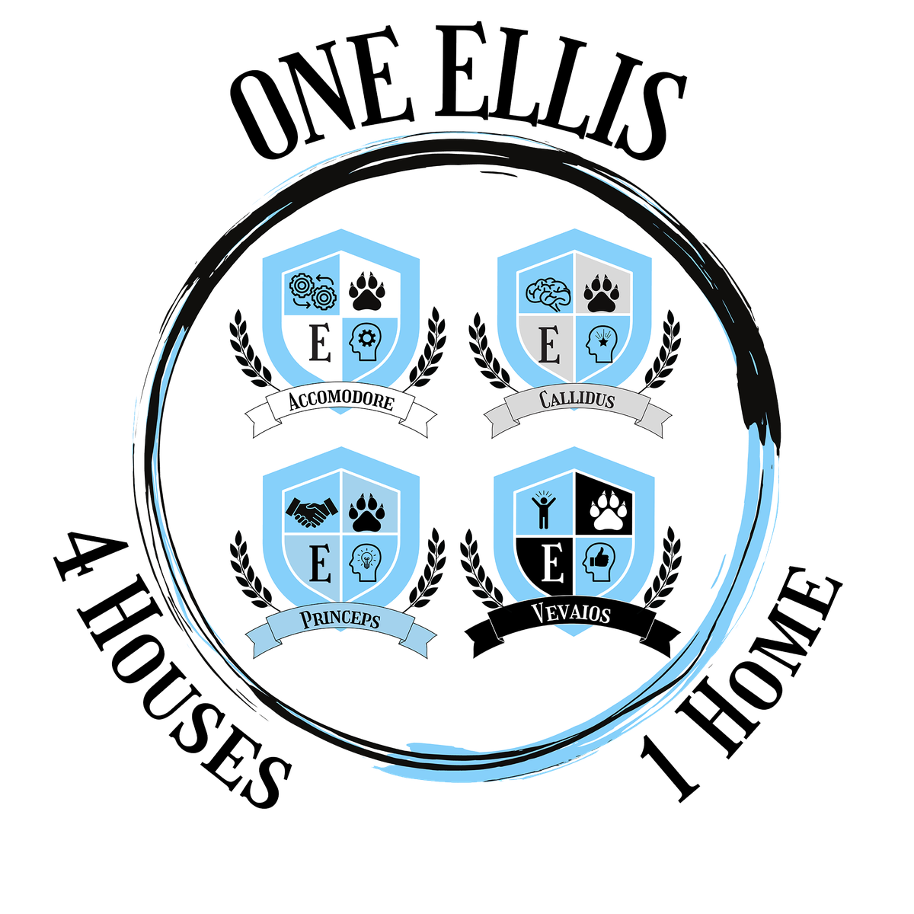

📺 School Dashboard Setup
•
🕐 Clock Display
Column 1:
Loading schedules...
Column 2:
Loading schedules...
Column 3:
Loading schedules...
Generate URL
Launch Dashboard
Copy URL
📺 Launch Last
📺 Launch TV View
Tip:
Customize your personal view using the options above. Canva content and house scores are shared across all TVs.
📺 Launch TV View
opens the shared dashboard that's on the school TVs (configured by admin).
Dashboard v1.6.0
← Back to Bell Schedule
